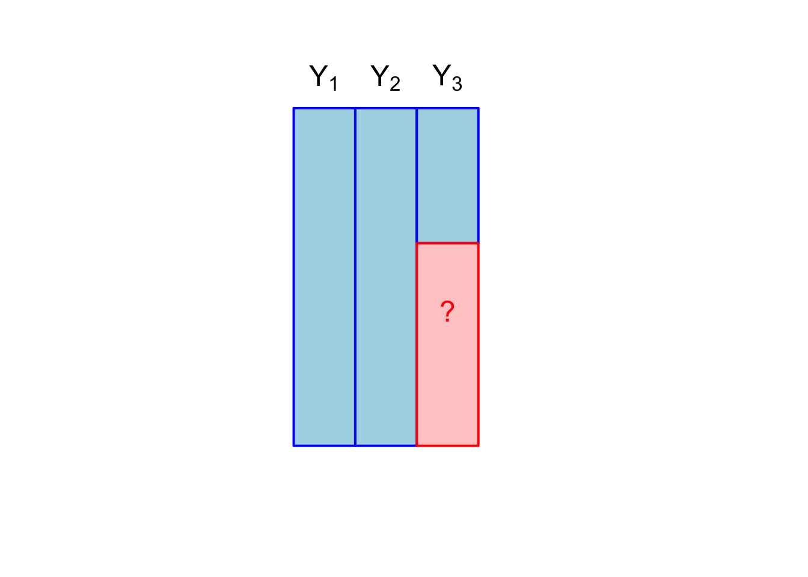
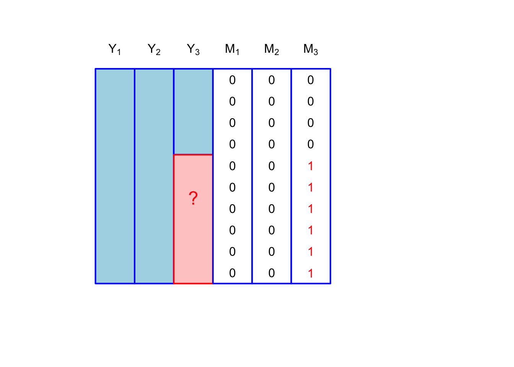

Lecture-1
Introduction
- Defined in the book roughly as missing values that would be meaningful for you analysis if it had been observed
- Missing data is ubiquitous
- I’d bet everyone has analyzed data with missing values
- What did you do with the units that had missing data?
Missing data patterns
- Course will focus on rectangular or tabular datasets
- Assume we have \(p\) measurements on \(n\) units, arranged into matrix \(\mathbf{Y}\)
- We can create an \(n \times p\) matrix \(\mathbf{M}\), where \(\mathbf{M}_{ij} = 1\) if \(\mathbf{Y}_{ij}\) is missing and \(\mathbf{M}_{ij} = 0\) if \(\mathbf{Y}_{ij}\) is observed
- For the next few slides, we’ll use \(n=10\) and \(p=3\)
Univariate missingness
## Graph with M
plot(1, type = "n", xlim = c(0.5, 5.5), ylim = c(0, 1), axes = FALSE, xlab = "", ylab = "")
# Define the bar positions and heights
blue_heights <- c(1, 1, 0.4)
red_heights <- c(0, 0, 0.6)
# Adjusted bar positions for no spacing
x_positions <- c(1, 1.5, 2)
bar_width <- 0.5
# Draw the blue bars
rect(x_positions[1] - bar_width / 2, 0, x_positions[1] + bar_width / 2, blue_heights[1], col = "#ADD8E6", border = "blue", lwd = 2)
rect(x_positions[2] - bar_width / 2, red_heights[2], x_positions[2] + bar_width / 2, red_heights[2] + blue_heights[2], col = "#ADD8E6", border = "blue", lwd = 2)
rect(x_positions[3] - bar_width / 2, red_heights[3], x_positions[3] + bar_width / 2, red_heights[3] + blue_heights[3], col = "#ADD8E6", border = "blue", lwd = 2)
# Draw the red bars
rect(x_positions[3] - bar_width / 2, 0, x_positions[3] + bar_width / 2, red_heights[3], col = "#FFCCCB", border = "red", lwd = 2)
# Add annotations
text(x_positions[2], red_heights[2] - 0.2, "?", col = "red", cex = 1.5)
text(x_positions[3], red_heights[3] - 0.2, "?", col = "red", cex = 1.5)
# Add category labels
text(x_positions[1], par("usr")[4] + 0.05, labels = bquote(Y[1]), xpd = TRUE)
text(x_positions[2], par("usr")[4] + 0.05, labels = bquote(Y[2]), xpd = TRUE)
text(x_positions[3], par("usr")[4] + 0.05, labels = bquote(Y[3]), xpd = TRUE)
x_positions <- c(2.5, 3, 3.5)
bar_width <- 0.5
# Draw the M columns
rect(x_positions[1] - bar_width / 2, 0, x_positions[1] + bar_width / 2, 1, col = "white", border = "blue", lwd = 2)
rect(x_positions[2] - bar_width / 2, 0, x_positions[2] + bar_width / 2, 1, col = "white", border = "blue", lwd = 2)
rect(x_positions[3] - bar_width / 2, 0, x_positions[3] + bar_width / 2, 1, col = "white", border = "blue", lwd = 2)
df <- data.frame(y = seq(0.05,0.95, length.out = 10),
m1 = rep(0,10),
m2 = rep(0,10),
m3 = c(rep(1,6),rep(0,4)))
text(rep(x_positions[1],10), df$y, label = df$m1)
text(rep(x_positions[2],10), df$y, label = df$m2)
text(rep(x_positions[3],6), df$y[1:6], label = df$m3[1:6], col = "red")
text(rep(x_positions[3],4), df$y[7:10], label = df$m3[7:10])
# Add category labels
text(x_positions[1], par("usr")[4] + 0.05, labels = bquote(M[1]), xpd = TRUE)
text(x_positions[2], par("usr")[4] + 0.05, labels = bquote(M[2]), xpd = TRUE)
text(x_positions[3], par("usr")[4] + 0.05, labels = bquote(M[3]), xpd = TRUE)
Example for this sort of missingness would be unit nonresponse on a survey; \(Y_1, Y_2\) would be design variables that are known for all potential survey respondenents, while \(Y_3\) would be measurement of interest
Does missingness matter?
- The book’s definition of missing data implies that knowing the missing value would meaningfully change our inferences
- We can bound this